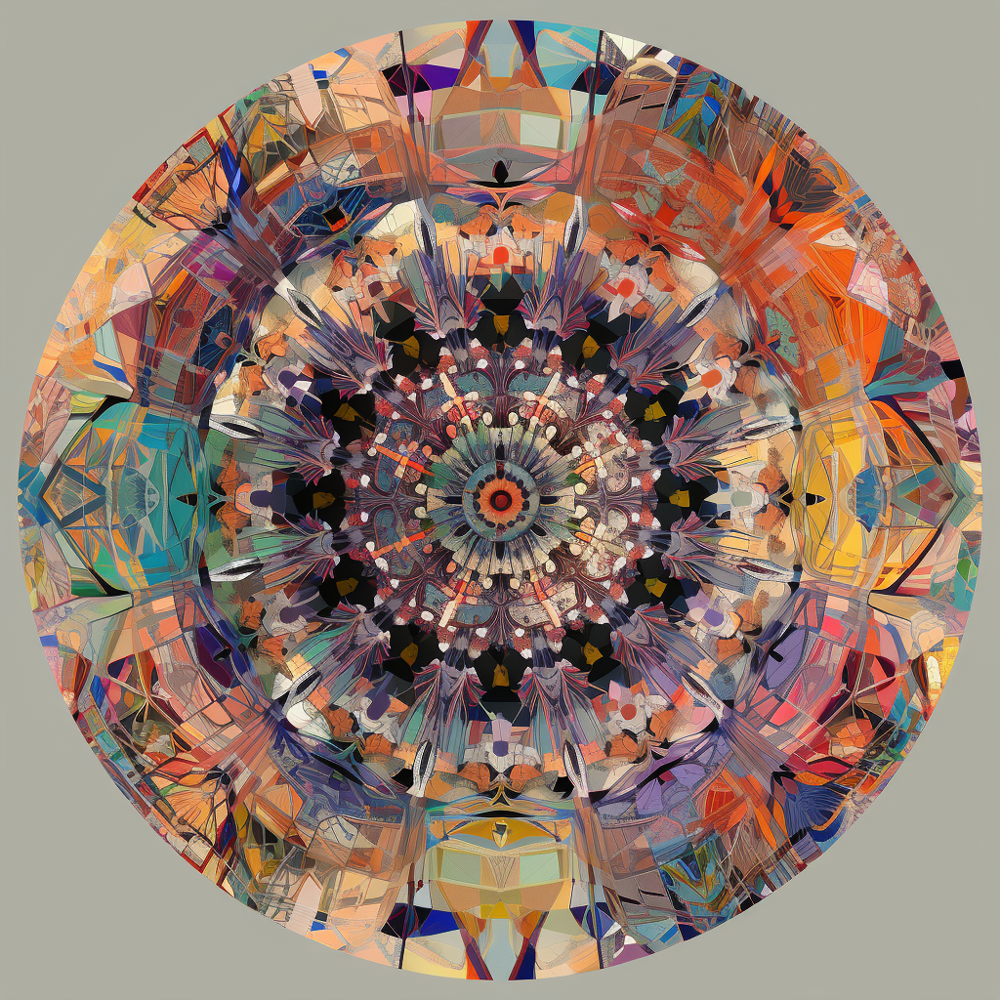

AI Researcher | Computational Journalist | Creator of aiportrait.wsj.com
NYC-based software engineer specializing in NLP and developing large language models for journalism and politics. I'm passionate about ways AI can improve the exchange of information and knowledge between humans.
Candid Selfie: A semi-periodic snapshot of where my head is at. New posts every Sunday.
I'm currently attending the Recurse Center, where I'm deepening my understanding of large language models and mechanistic interpretability.
Socials